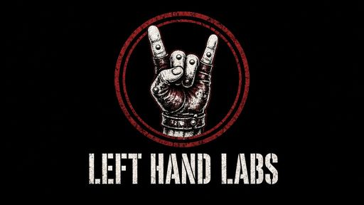

Left Hand Labs Music
A one-person audio plugin shop in Minnesota. One person writes the code, tunes the kits and answers the email.
The story
Left Hand Labs Music is a small plugin builder, creating easy-to-use, inexpensive plugins. No subscriptions, and no need to buy into multiple plugin ecosystems to use them.
What we make
- Backing Track Plus, a free practice plugin: load a Guitar Pro MIDI export and it plays the bass and drums while you play guitar. Windows standalone (ASIO) + VST3.
- Nine genre drum kits, from 70s rock to slam and prog death, each with one big knob plus an optional mixer. VST3 + standalone for Windows. All nine come together as The Whole Menu.
How the kits are made
Every drum hit is a real acoustic recording from open-licence sample libraries (CC BY 4.0 and CC0), recorded by real drummers and engineers. For each hit, the close, overhead and room mics are mixed down, trimmed, level-matched, sorted into velocity layers and round robins, and mapped in SFZ. No synthesized sounds, impulse responses or reverb are added to the sample files. Some kits share source recordings, and every source is credited by name.
The plugins are built with JUCE and the sfizz SFZ engine. In the free plugin, the bass notes come from Karoryfer Samples' free Black And Blue Basses, and the 7 amp and drive tones are our own.